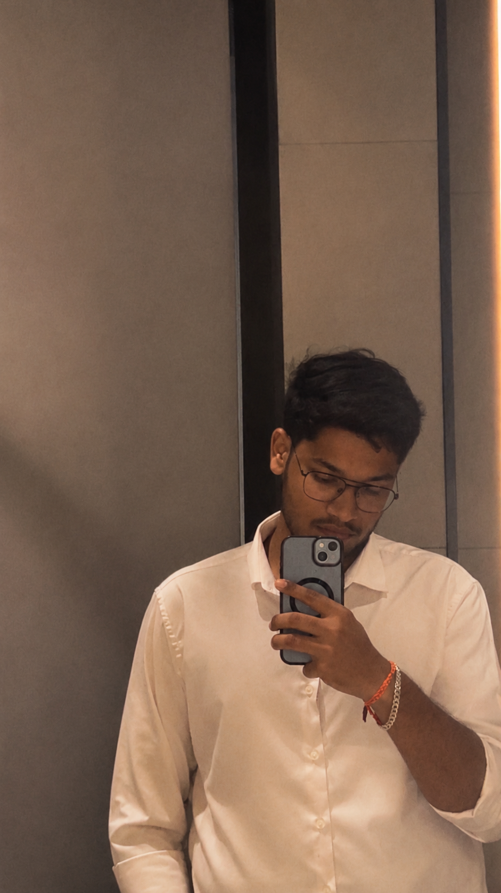

01AI / REINFORCEMENT LEARNING
SMART TABLE ALLOCATION
AI Agent for Restaurant Table Availability
A project concept exploring reinforcement learning to support restaurant table-availability decisions and smarter allocation of tables.
HELLO, I'M
I'm a final-year B.Tech Computer Science and Engineering student who enjoys turning ideas into clean, intuitive, and engaging web experiences.

01 / ABOUT ME
I’m Uday, a Computer Science and Engineering student in the final year of my B.Tech at SR University.
I’m interested in frontend development, UI/UX, and practical software engineering. I like learning by building — taking a problem, understanding the people using it, and shaping a useful solution with thoughtful design and code.
Alongside web development, I’ve explored AI/ML concepts, Python and Java programming, and collaborative project work using structured development practices.
Let's build something meaningful ↗Always exploring new tools and ideas.
Turning coursework into practical projects.
Care about clarity, usability, and detail.
02 / TOOLKIT
A growing toolkit, backed by a willingness to learn and improve with every project.
The list below reflects technologies and areas I've worked with or explored. I'm continuously strengthening these skills.
03 / SELECTED WORK
A selection of academic and concept projects I've explored. Project descriptions can be refined with your final implementation details and repository links.
A project concept exploring reinforcement learning to support restaurant table-availability decisions and smarter allocation of tables.
A learning-management platform concept with registration, video lessons, assignment uploads, quizzes, and certificates, planned with a layered architecture.
A banking application concept covering savings and current accounts, deposits, withdrawals, transfers, interest calculations, and unit testing.
Note: These are based on projects discussed during our previous chats. Update each description to match the features you personally implemented before publishing.
04 / MY JOURNEY
SR University · Final year
Developing a stronger foundation in software development, problem-solving, and computer science.
Academic and self-driven exploration
Practising programming, algorithms, web development, AI concepts, and collaborative project workflows.
05 / CONTACT
I'm open to internships, entry-level opportunities, collaborations, and conversations about technology.